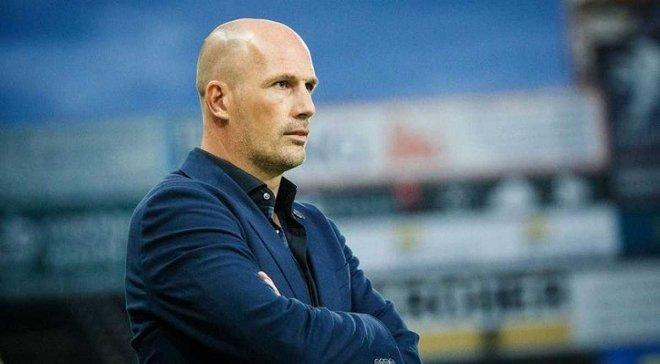
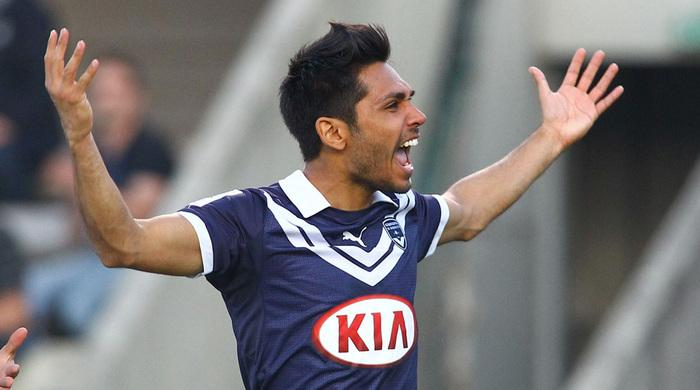
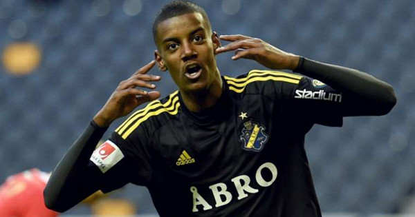

Тренер "Генка": "Я видел повтор эпизода и знаю,
что Малиновский не сделал ничего ужасного"

Главный тренер "Генка" Филипп Клеман после матча чемпионата Бельгии с "Гентом" (2:1)
прокомментировал удаление Руслана Малиновского, который в этом поединке стал автором дубля.
- Я видел повтор эпизода, и знаю, что Малиновский не сделал ничего
ужасного. Его нога не напряжена, он не готовился специально сделать удар ногой. Соперник
просто налетел на шипы бутсы Малиновского, поэтому красная карточка – это вовсе не то
наказание, которое следовало бы применить в данном случае. Любой, кто играл в футбол, и видел
этот эпизод, понимает, что наказывать за такое дисквалификацией - неправильно. Что меня больше
всего беспокоит сегодня? Возможно, люди, которые не играли в футбол, будут судить действия Малиновского
и применят к нему неоправданные санкции. Это даже не красная карточка, как по мне, - отметил Филипп Клеман.
Сергей РЕБРОВ: "Петряк счастлив в "Ференцвароше", но
его будущее в руках "Шахтера"
Тренер венгерского "Ференцвароша" Сергей Ребров рассказал, что команда хотела бы подписать игрока "Шахтера"
Ивана Петряка.Украинцы не против отпустить игрока за 2 миллиона, но венгры попытаются снизить цену.
"Мы хотим наконец-то заполучить Петряка, но это нелегко. Сначала "Ференцварош" должен договориться с "Шахтером".
Конечно, если Иван останется в команде, это будет хорошая новость.
Я разговаривал с Петряком, он счастлив здесь, но его будущее в руках "Шахтера", - цитирует Реброва csakfoci.hu
Напомним, что Петряк стал одним из лидеров "Ференцвароша". В 32 матчах за команду во всех турнирах игрок забил
6 голов и отдал 11 результативных передач.
Бенуа ТРЕМУЛИНАС: "У "Динамо"выделялся Ярмоленко"

Бывший защитник Динамо Тремулинас вспомнил лучших игроков,
с которыми выступал в одном составе."Эвер Банега из Севильи
всегда мог отдать передачу в таком темпе, который требуется, чтобы
на нее успеть и сделать ситуацию острой.У Динамо выделил бы Андрея
Ярмоленко, который обладает хорошими физическими данными, скоростью,
техническим мастерством, а также способен одинаково успешно играть обеими
ногами. Что касается Бордо, то лучшим был Иоанн Гуркюфф", – рассказал
Тремулинас в интервью L`Equipe.Отметим, что Бенуа провел за Динамо
10 матчей с 2013 по 2015 годы. Добавим, что киевляне сегодня встретятся
с донецким Шахтером в матче 1/4 финала Кубка Украины, начало игры в 17:00.
Азар практично погодив контракт з Реалом
СМИ сообщили финансовые подробности летнего перехода полузащитника «Челси»
Эдена Азара в «Реал».Стоимость трансфера составит порядка 100 млн фунтов.
Бельгиец заключит с мадридским клубом шестилетний контракт и будет зарабатывать
по 350 тыс. фунтов в неделю.Напомним, Азар неоднократно заявлял о своем желании
перейти в «Реал», но ранее руководству «Челси» удавалось убедить игрока остаться.
Челси поборется с "Барселоной" за форварда "Боруссии"

Челси" вступил в борьбу за шведского нападающего дортмундской "Боруссии"
Александеру Исаку, сообщает Football Oranje.По сведениям издания,
представители английского клуба следили за игрой Исака в матче
чемпионата Нидерландов "Виллем II" - "Аякс" (1:4). Также форвардом
интересуется "Барселона". Впрочем, приобрести игрока "Челси" будет
непросто, так как на клуб наложен трансферный запрет.В нынешнем
cезоне 19-летний Исак выступает за"Виллема II" на правах аренды,
провел за клуб 22 матча во всех турнирах, в которых забил 16 голов
и отдал пять результативных передач. Его контракт с клубом действует
до лета 2022 года.